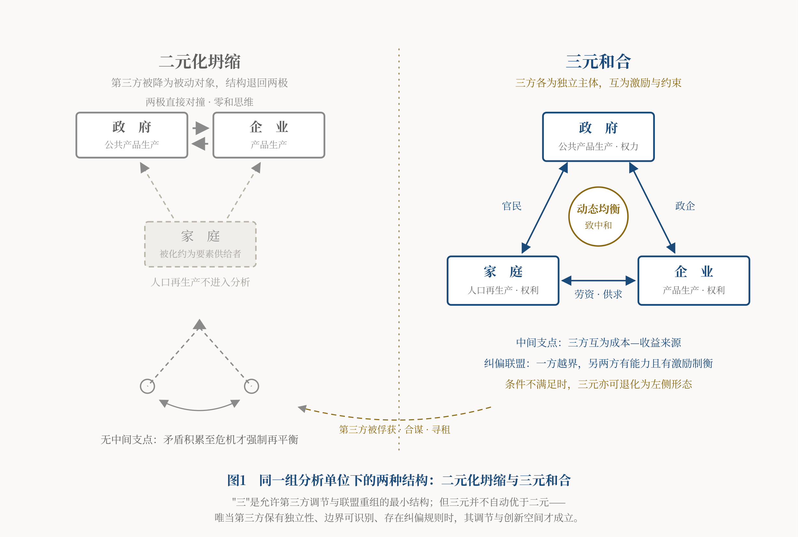

导言
任何经济学体系，都站立在某种哲学之上，只是多数时候未曾言明。曼昆《经济学原理》背后，站着原子式的理性个人、机械论的均衡观，以及市场与政府二元对立的思维框架。本站前述各篇所批评的理论局限——对家庭人口生产关注不足、对政府公共产品生产的理论定位不充分、对某些总供求失衡解释不足——都与其哲学前提有关。地基有问题，大厦必然倾斜。
合三为一政治经济学的地基是什么？是和合主义。为避免望文生义，先给出定义：
和合主义，是一种关于差异共生的社会哲学。它承认差异与矛盾是人类社会的常态和创造之源，主张异质主体通过相互制衡与合作博弈达成动态均衡；它反对用两种方式处理社会矛盾——消灭差异的强制同一，和放任对抗的零和斗争。
这个定义可以展开为三个命题：其一，差异是存在与创造的前提（本体论）；其二，和合是矛盾解决的常态方式，斗争是代价巨大的极端方式（方法论）；其三，在明确条件下，三元制衡结构比二元对立结构增加了调节、联盟重组与制度创新的可能（结构论）。落实到政治经济学，就是：家庭、企业、政府三种异质的有组织力量，通过"大三权"分立与制衡寻求动态均衡，以合作博弈减少零和对抗，追求三赢与共同富裕。
本文分三步展开：先溯源立义，说明和合主义从何而来、主张什么；再以五个维度比较和合主义与自由主义、社会主义，说明它如何整合二者、又如何落实为政治经济学；最后正面回应四个最可能的质疑。
一、"和实生物"：和合主义的思想源流与定义
1、古典源流
与"和"相关的两个古字，各自引出一种传统解释："龢"从龠，龠为多管的笙类乐器——众管长短各异，合奏方成乐音；"盉"为调味之器——酸咸甘苦各味相济，方成美羹。[1]音乐与调味，是中国先民理解"和"的两个原初隐喻，共同点一目了然：和，是异质元素的相济相成，而不是同质元素的简单叠加。
把这个直觉提炼成哲学命题的，是西周末年的史伯。《国语·郑语》记载他的名言："夫和实生物，同则不继。以他平他谓之和，故能丰长而物归之；若以同裨同，尽乃弃矣。"[2]用今天的话说：差异元素的相互作用（以他平他）才能生成新事物、才有可持续的生长；同质元素的自我叠加（以同裨同），没有任何生成能力，终归枯竭。这是世界思想史上极早的"差异生成"命题之一——史伯的年代（西周末年，约公元前八世纪）早于古希腊赫拉克利特关于对立统一的论说约两个世纪。本文据此提出一个现代解释：可以把史伯的命题读作一种差异本体论——差异先于同一，和生于异。需要说明，这一解释属于本文的哲学立场，而非史伯原文的直接结论。
春秋时期，晏子把这个命题推进到政治领域。《左传·昭公二十年》记载他以"和羹"喻君臣："和如羹焉……宰夫和之，齐之以味，济其不及，以泄其过。"君主说"可"，臣下应当献上"否"来完善这个"可"；如果君主说什么臣下都附和，那就是"以水济水，谁能食之？"[3]——异见不是政治的敌人，而是政治健康的前提。
孔子将其凝练为八个字："君子和而不同，小人同而不和。"[4]和而不同，从此成为中华文明处理差异的核心智慧。
老子则贡献了一个结构性的洞见。《道德经》第四十二章："道生一，一生二，二生三，三生万物。万物负阴而抱阳，冲气以为和。"[5]值得注意的是这个"三"。本文对"冲气以为和"作一种结构性解读：阴阳二元自身并不直接生成万物，须有调和之项介入，生成才成为可能——二元是对峙，三元才有生成。必须申明，这是面向政治经济学的现代阐释，而非对《老子》原义的唯一训释；历代注家对"冲气"的解说本就分歧甚多。就本文的问题意识而言，它提示了"三"的结构原理，可视为"合三为一"的哲学远祖。
《易传》讲"保合太和，乃利贞"[6]，《中庸》讲"中也者，天下之大本也；和也者，天下之达道也。致中和，天地位焉，万物育焉"[7]——"太和"与"致中和"提示了另一个要点：和不是静态的终点，而是动态的"度"的把握，是在变动中持续趋衡的过程。
2、现代脉络：张立文的"和合学"与本文的承继
需要坦荡说明的是，"和合"作为现代学术概念，首倡者是哲学家张立文先生。他在上世纪九十年代提出"和合学"，系统梳理了和合思想的历史脉络，将其提炼为回应21世纪人类文化冲突的战略构想。[8]
本文所论的和合主义，在概念来源和问题意识上承继"和合学"，但论域、方法与指向皆有不同：张立文先生构建的是文化哲学体系，回应的是文明冲突与文化危机；本文则把和合原理落到政治经济学，为家庭、企业、政府"大三权"分立与制衡的理论框架提供哲学根据，方法上引入博弈论和制度分析，指向经济制度的解释与设计。一言以蔽之："和合学"是文化哲学，"和合主义"是政治经济哲学。前者是本文的思想资源之一，后者的对错由本文自负其责。
3、三个命题：和合主义说什么
现在可以把导言中的定义展开为三个命题，并逐一给出现代学术的对应物——和合主义不是玄学，它的每一个命题都能在当代科学和社会科学中找到独立生长出来的印证。
命题一（本体论）：差异是存在与创造的前提——"和实生物，同则不继"。
差异不是需要克服的缺陷，而是系统活力的来源。这一命题在现代科学中有可比较的经验场景，但须说明其证据强度：生态学关于多样性与稳定性关系的研究表明，多样性在若干条件下可以提高生态系统功能的稳定性，不过"稳定性"本身包含抵抗力、恢复力等不同维度，效应方向与强度随指标和情境而变，并非一律为正[9]；国际贸易理论中的比较优势原理表明，禀赋差异可以产生交换收益，不过在技术差异、规模经济与产品差异化条件下，禀赋相同的国家之间同样可能发生产业内贸易。这些研究不能证明和合主义，它们提供的是"差异具有生成性"的可比较经验场景。落到本站的理论：家庭、企业、政府的组织属性、职能、目标根本不同且相互矛盾——家庭要幸福、企业要利润、政府要权力——恰恰因为异质，三者才能互为激励、互为约束、互为成本—收益来源。假如三者同质化（政府办企业包揽生产、企业办社会替代家庭），系统反而失去活力，这正是"以同裨同，尽乃弃矣"。
命题二（方法论）：和合是矛盾解决的常态方式，斗争是代价巨大的极端方式。
和合主义承认矛盾普遍存在——这一点与辩证法一致；分歧在于矛盾如何解决。把斗争性视为绝对、把矛盾的激化与决裂视为发展的常态动力，是对历史的片面读法。本站《曼昆〈经济学原理〉的三大缺陷》（以下简称"曼昆批判"）各篇反复展示的"两种方案"——"市场机制＋经济危机"与"市场机制＋政府干预"——其哲学表达正是"斗争解决"与"和合解决"：危机、革命、战争，是矛盾以破坏方式强制再平衡，代价是巨大的经济破坏和人口损失；合作博弈、"大三权"均衡，则是矛盾以和合方式持续调节，把再平衡的成本降到最低。和合主义并不否认斗争的存在及其某些历史条件下的必要性（详见第三部分第一问），但主张：斗争是恢复均衡的非常手段，而非社会运行的常态哲学。这个命题在博弈论中有一个条件性的对应结果：阿克塞尔罗德关于重复囚徒困境的研究表明，在未来互动足够重要、参与者能够识别并回应对方行为等条件下，基于互惠的合作可以从少数群体中涌现、稳定并抵抗入侵[10]——合作未必依赖道德说教，在特定条件下它也可以是理性行为在时间维度上的产物。这里的关键是"条件"二字：合作的涌现不是无条件规律，而制度设计的意义，恰恰在于创造并维持这些条件。
命题三（结构论）：在明确条件下，三元制衡结构比二元对立结构增加了调节、联盟重组与制度创新的可能。
这是和合主义最具原创性、也最直接支撑"合三为一"框架的命题，需要多说几句。
当二元关系被构造成相互排斥的对立结构时，容易出现三个缺陷。第一，无中介：两极直接对撞，矛盾缺少缓冲和调停，系统容易在两极之间做无阻尼的钟摆震荡——劳动与资本、公平与效率、左与右，非此即彼、你进我退、此消彼长。第二，零和化：排他性的二元框架容易诱导零和思维，一方所得被理解为另一方所失，妥协被视为背叛，共赢难以形成。第三，生成空间收窄：结构的演化容易退化为一方吃掉另一方（强制同一），或者长期对峙（以同裨同），产生新组合和新制度的空间受到压缩。
引入具有相对独立性和实际能力的第三方，结构性质可能发生改变。第一，出现了中间支点：第三方可以居间调停、缓冲两极冲突，曼昆批判中篇所论政府作为总供求之间"天平支点"的角色，就是这个原理的宏观经济学表达。第二，出现了防止恒定压制的可能：三方格局中，一方试图独大越界，另外两方存在联合纠偏的空间——这是"大三权"非对称制衡可以运转的结构条件，它不要求任何一方道德高尚，但要求制度设计使另两方有能力且有激励结成纠偏联盟。第三，出现了生成性：三元互动可能产生二元对峙中难以形成的组合、联盟与妥协方案，从而打开制度创新的空间。
但必须立即补上限定，否则这个命题会滑向它自己反对的独断。三元结构并不自动优于二元结构。第三方可能与一方合谋压制另一方，可能被最强一方俘获，可能自身成为寻租者，可能诱发不断变换的两方联盟，也可能只是增加了否决点与交易成本——这些都是三元结构的真实失灵形态，本文不回避，反而认为它们正是制度设计要防范的对象。因此，本文能够捍卫的命题是一个条件命题：
当第三方具有相当的独立性、三方的权利与权力边界可识别、结盟与退出的成本不过高、且存在纠偏规则时，三元结构比纯二元对抗多出调停、联盟重组与制度创新的可能性。
条件不满足时，三元可能退化为"二元＋一个装饰性第三方"，甚至比二元更糟。把命题写成条件式，不是把它变软，而是把它变成可以反驳、可以检验的命题——一个无条件成立的规律，往往也是无法证伪的空话。
必须澄清：三元胜出不是数字神秘主义。"三"的实质是允许第三方调节与联盟重组的最小结构——两方对峙没有结构调节的余地，三方是产生调节空间的最低门槛（"二"当然也是多元，但二元中没有可供调停的位置）。老子"三生万物"是这个结构原理的隐喻性先声，而非神秘论证。
同理，"合三为一"的"三"，指的是家庭、企业、政府——本文所说的三种有组织力量，界定标准不是组织形态的正式程度，而是承担三类基础再生产功能：家庭承担人口与劳动力的再生产，企业承担产品与服务的生产，政府承担公共产品的生产。以此为准，家庭虽非正式组织，却是人口再生产的基本单位；而工会、政党、行业协会、宗教团体、社区组织、非营利机构乃至平台企业，或归属于三类部门之一，或跨越其间发挥中介作用——它们的存在不构成对三分法的反例，反而是三方内部结构与联结机制的组成部分。这一界定是功能性的，也是可争议的：如果有人能指认第四类不可归并的基础再生产功能，本文的"三"就需要修改。
在三个命题之外，还应补充一个概念："度"。《中庸》的"致中和"提示：三元制衡不是一劳永逸的静态终点，而是在变动中对"度"的持续把握。工资、利润、税收三者之间的"大三权"均衡，不是可以一次求解的静态最优点，而是随条件变化的动态均衡区间；政府在左右之间的钟摆式纠偏，是动态的趋衡——和合主义的均衡观，从一开始就是动态均衡观。

二、整合自由主义与社会主义：从二元对立到三元制衡
自由主义与社会主义，是西方文明贡献给世界的两大意识形态，都对工业革命以来的人类社会产生了深远影响。和合主义对二者的态度，不是取其中间点的折中，而是结构性的整合：辨明各自的哲学偏执，吸纳各自的合理内核，在三元框架中给它们重新安排位置。
先作一项必要声明。下文比较的，是两种在二十世纪政治经济实践中产生过强大影响的理想类型——市场与私权优先的自由主义、计划与公有优先的社会主义，而非穷尽两大传统内部的全部流派。社会自由主义、福利自由主义、市场社会主义、民主社会主义等等，都在不同程度上突破了下文所述的类型特征，其中一些尝试本身即可视为向和合方向的靠拢。理想类型的作用是提炼结构差异，不是给具体思想家画像；用个别流派的反例来否定类型比较，与用类型比较来概括全部流派，是同一个错误的两面。
1、自由主义：效率的哲学及其偏执
本文所提炼的市场—私权优先型自由主义，偏爱私有制与市场机制，警惕政府干预，强调个人利益与私权利。它的历史功绩不容抹杀：把个人从人身依附中解放出来，激励了家庭生命力和企业生产力的活力与创造力，推动了科技创新和经济发展。
但自由主义有其哲学偏执。它的底层是二元对立思维：个人对国家、市场对政府、自由对管制——并且把二元中的一极绝对化。个人权利被推向极端，集体权利被系统性轻视；市场被推向万能，政府被贬为"必要的恶"。反映到现实，就是资本无节制扩张，家庭劳动与企业资本、生命力与生产力的矛盾被激化，贫富悬殊、社会撕裂。曼昆批判下篇对美国社会的解剖已经展示了这个逻辑的完整展开：兴亦自由主义，衰亦自由主义。在"大三权"的语言里，自由主义的病理是配置过度偏"右"——企业权利独大，家庭权利与政府职能双双萎缩。
在国际关系中，这种偏执表现为一国利益的绝对化："美国优先"，正是原子式个人主义在国家层面的放大。
2、社会主义：公平的哲学及其偏执
本文所提炼的计划—公有优先型社会主义，偏爱公有制，看重结果平等与公平优先，这符合人类对大同世界的理想追求，其历史功绩同样不容抹杀：社会主义运动与劳工运动，是推动资本主义世界建立劳工保护、社会保障与福利制度的重要力量之一——二十世纪资本主义的自我改良有多重来源，但很难设想在没有这股压力的情况下，它会以同样的速度和幅度发生。
但社会主义同样有其哲学偏执，而且是同一枚硬币的另一面：它也是二元对立思维——劳动对资本、公有对私有、计划对市场——只是把另一极绝对化了。它可以消灭生产资料私有制，却无法消灭劳动力人力资本的天然私有：人力资本存在于个体生命之中，除非奴隶制，天然属于个人。每个人先天禀赋与后天能力不同，即使机会绝对平等，结果也绝对不平等。强行以平均主义抹平这种差异——百米赛跑强制"一齐撞线"——其结果是"以同裨同"：在生产资料公有制面前人人平等，人人的私心却被压抑成集体性的偷懒，激励机制瓦解，经济陷入短缺与共同贫穷。这是计划经济陷入困境的重要哲学根源之一：它试图用强制同一来处理差异，违背了"和实生物、同则不继"的本体论。须补充的是，计划经济的困境是多因的——信息与计算约束、激励机制、产权结构、政治约束与特定历史条件都在其中起作用（曼昆批判上篇及本站《中国崛起的制度与文化之谜》另有讨论）；本文只主张哲学层面的这一条是其中不可忽略的一环，不主张它是唯一根源。在"大三权"的语言里，社会主义的病理是配置过度偏"左"——政府权力独大，企业权利被取缔，家庭权利被组织化吞没。
3、五个维度的比较
把两大理想类型与和合主义并置比较，差异可以在五个维度上清晰呈现（下表为理想类型比较，非流派全貌）：
| 维度 | 自由主义 | 社会主义 | 和合主义 |
|---|---|---|---|
| 人性论 | 原子式的理性个人 | 抽象的集体人 | 关系中的人：人总是存在于家庭、企业、政府三种组织关系之中 |
| 产权观 | 私有财产神圣不可侵犯 | 生产资料公有制 | 公私产权和合并存：人力资本天然私有＋非人力要素公私混合＋公共产品公有 |
| 公平与效率 | 机会平等优先，接受结果不平等 | 结果平等优先，牺牲部分效率 | 效率生于差异竞争，公平赖于三方制衡，两者在动态均衡中相互转化 |
| 政府观 | 必要的恶，越小越好 | 全能的善，管控一切 | 三方之一：公共产品生产者，受家庭、企业制衡的中间支点 |
| 国际观 | 其现实主义版本趋于本国利益绝对化 | 其早期革命输出版本诉诸世界革命 | 和而不同、合作共赢、竞合并存 |
从表中可以看出，和合主义在每个维度上都不是两者的中点，而是换了一个结构：前两者都在二元框架内把某一极绝对化，和合主义则把二元对立改造为三元制衡——它吸纳自由主义对差异、竞争、效率的肯定（这是命题一的应有之义），吸纳社会主义对公平、协作、共同体的追求（这是命题二的应有之义），而用三元结构（命题三）克服两者共同的病灶：一极独大的失衡。
4、三元制衡的政治经济学展开
哲学命题如何落地为政治经济学？合三为一政治经济学的四个核心构件，与和合主义三命题之间存在严整的对应关系。
和而不同→两种生产的辩证运动。 家庭人口生产与企业产品生产，是两种组织属性、运行逻辑、再生产周期根本不同的生产（曼昆批判上篇），生命力与生产力相互矛盾又互为前提。主流经济学把家庭化约为"生产要素所有者"和"消费者"，实质是抹平差异的"以同裨同"——把两种生产同质化为一种生产，于是看不见人口再生产，也就解释不了生产过剩与需求不足。承认差异，才能看见辩证运动。
三元结构→三种生产与"大三权"分立与制衡。 在两种生产之间引入政府的公共产品生产（曼昆批判中篇），二元变三元：政府成为总供给与总需求之间的中间支点，市场机制与政治机制交织，"大三权"相互激励、相互约束。任何一方越界——资本剥削劳动、权力压制市场、民粹绑架政府——都会侵蚀另两方的存在基础。但纠偏并不自动发生：制度设计的任务，正是使另外两方在此时有能力、也有激励结成纠偏联盟。这就是非对称制衡的哲学根据：它不指望圣人，但也不能只指望结构自发运转，它要求把纠偏的能力与激励写进规则。
致中和→"大三权"均衡。 工资、利润、税收，是三种性质不同的分配变量，在市场博弈与政治博弈中此消彼长，其动态均衡就是曼昆批判下篇所论的"大三权"均衡价格——须说明，那里的"价格"是广义用法：工资与利润可在要素报酬意义上视为价格，税收则是法定征收，本文将三者并称，取其"同为三方博弈所决定的分配比例"之义，而非主张税收是市场价格。这一均衡不是可以一次求解的静态最优，而是需要在钟摆运动中持续把握的"度"。政府的宏观管理，本质上是致中和的技艺。
合作的可持续性→和合主义可借用的形式化工具。 和合主义可以借用博弈论的部分工具来研究一个问题：制度规则如何改变支付结构、信息条件、重复互动的预期与承诺机制，从而使互利合作成为可持续的均衡。这里必须澄清一个容易混淆的用语：博弈论中的"合作博弈"与"非合作博弈"是建模方式的技术分类——前者允许具有约束力的联盟并研究联盟价值与收益分配，后者以个体策略为分析单位——它们不是"共赢"与"对抗"的道德分类；事实上，非合作博弈的均衡同样可以支持长期合作（这正是重复博弈研究的核心结论）。本文所说的"合作"，是行为与结果意义上的合作。和合主义主张的制度设计方向由此可以表述为：改造规则与激励，使囚徒困境式的结构转化为各方合作可自我维持的结构，让合作成为理性选择而非道德要求。就形式化程度而言，本文目前只是借用工具与语言，尚未建成模型——这是后续研究的任务。
顺带指出，这四个映射合起来，也回答了历史观问题：决定社会发展的内在力量，不是单一的物质资料生产方式，而是家庭、企业、政府三种生产在时间之流中的和合运动——"三种生产＋时间"。这是从旧唯物史观向新唯物史观的更新，其哲学内核正是命题一与命题三。
5、三个检验场
哲学框架的价值，要在解释现实中检验。这里给出三个检验场的简要考察。
中国改革。 中国四十多年改革的制度轨迹，用和合主义看，是一个从强制同一走向差异共生的过程：家庭联产承包责任制，是承认家庭差异与私心的和合安排；混合所有制与资本社会化，是公有产权与私有产权的和合安排；"社会主义市场经济"这个曾被讥为语词矛盾的组合，实质是政府干预与市场机制的和合安排。就此而言，中国的政治经济体制，名义上是社会主义，实际上正在探索的是一条和合主义道路——这是一个分析性判断，而非价值站队，其检验标准是制度的实际运行逻辑，而非其名称。同时必须坦承：探索远未完成，"大三权"配置在现实中仍然失衡——曼昆批判中篇诊断的两大症结（重生产轻生活、家庭权利权重不足），正是配置偏于企业与政府、生命力受抑于生产力的表现。和合主义不是对现状的辩护，而是对失衡的批判尺度。
这里应当主动面对两种竞争性解释。其一是"渐进主义／实用主义改革"说：中国改革之所以成功，在于试点先行、双轨过渡、摸着石头过河的方法论，而非任何哲学取向。其二是"发展型国家"说：中国属于东亚发展型国家序列，政府主导产业升级、以高积累支持增长，是其成功的关键。两说都有很强的解释力，本文并不否定。和合主义解释主张自己多解释了两件事：一是为什么渐进主义在中国能持续四十余年而未被逆转——因为改革实际造出了家庭与企业两个独立主体，形成三方相互依存的结构，而不仅仅是方法上的谨慎；二是为什么发展型国家模式在今天遭遇内需困境——因为三方配置长期偏向企业与政府，家庭一极过弱，这恰是三元框架能够预先指认、而发展型国家理论往往视为成功要素的东西。这两点是否成立，本文交由批评者检验。
多极化世界。 曼昆批判下篇的结论是：无政府的全球市场经济需要新的意识形态公共产品。自由主义国际秩序观中的现实主义—强权版本，在实践中常常退化为丛林规则（其自由国际主义版本另有多边合作的一面，此处不予混同）；而二十世纪社会主义的世界革命方案，已被历史证明难以成立；多极化世界需要的，恰恰是承认各国差异（和而不同）、以合作博弈替代零和对抗（正外部性的相互供给）、在多强并立中寻求动态均衡（三元乃至多元制衡）的框架——这正是和合主义三个命题在国际层面的直接应用。
AI时代。 当生产力可能碾压生命力（本站A-1）、当人类面临意义力危机（A-2），和合主义提供的是价值锚点：生命力高于生产力，人的目的性高于工具的效率性；AI治理需要的全球规范，本质上是人类与技术、国家与国家之间新的和合结构。技术越强大，"度"的把握越攸关存亡。
三、回应质疑：四问四答
和合主义作为一个新造的理论概念，必然面对质疑。本站的立场是"没有现成答案，只有认真的追问"，因此这里不回避最尖锐的四问。
第一问：和合是不是"和稀泥"？回避矛盾、抹平斗争，算什么哲学？
答：这是对和合主义最常见的误读。需要重申：和合以承认矛盾为前提——"和实生物"的前提正是差异与矛盾的实在性；晏子明言"以水济水，谁能食之"，无原则的附和恰恰是和合的反面。和合主义不否认斗争：当矛盾激化到一方拒绝共存、执意消灭差异时——法西斯主义即为适例——斗争就是恢复和合的必要手段。毛泽东在抗日民族统一战线中的名言"以斗争求团结则团结存，以妥协求团结则团结亡"[11]，讲的正是这种情境下斗争对于和合（团结）的工具性价值。和合主义与斗争哲学的分界不在承认不承认斗争，而在斗争的定位：前者视斗争为恢复三元制衡的非常手段，判据是能否回到共生结构；后者视斗争为社会运行的常态动力，以对立的激化为发展的引擎。一个把斗争当药，一个把斗争当饭。
第二问：和合主义能否检验？一个不可证伪的框架，与信仰何异？
答：和合主义作为哲学框架，本身如同一切研究纲领的硬核，不直接接受检验；但它能够派生出可检验的命题[12]，试举其三。命题甲（研究假说）：在控制收入水平、人口结构与外部冲击之后，家庭、企业、政府之间的权利—资源配置越是偏离某一可度量区间，需求不足、分配冲突或财政失衡的发生概率越高。曼昆批判下篇对美国（配置偏右、贫富撕裂）与中篇对中国（重企业轻家庭、内需不足）的诊断，可视为这一假说的两个案例性对应。必须坦率承认：该假说目前尚不构成严格检验——"配置"的可度量指标（如劳动报酬占比、居民消费率、社会保障覆盖率、部门储蓄率结构等）、识别策略与区间阈值，都有待后续研究建立。在此之前，它是一个研究议程，而不是一项已被检验的结论。命题乙：存在有效第三方调节机制的劳资关系，其冲突烈度与冲突成本低于纯二元对抗的劳资关系——国际劳工组织倡导的政劳资三方机制、北欧与德国的社会伙伴协商制度，为跨国比较提供了现成样本。命题丙：把囚徒困境式结构改造为合作可自我维持的制度安排，其长期存续能力优于放任零和对抗的安排——奥斯特罗姆对多类公共池塘资源制度的比较研究表明，在边界清楚、规则与地方条件相适应、有监督与渐进制裁等条件下，使用者自治可以长期存续[13]；这为超越"要么私有化、要么中央管制"的二分提供了重要经验材料，但它研究的是特定类型的资源治理，并未证明"正和制度在一般意义上长期绩效更优"。坦率地说，和合主义目前更像拉卡托斯意义上的一个研究纲领：硬核清晰，保护带尚薄，派生命题的系统检验有待展开[12]。还须补充一句以免误解：研究纲领的硬核不直接接受检验，并不等于它免于经验压力——按拉卡托斯的判据，纲领若能不断预测并证实新事实，是"进步的"；若只能事后为反常打补丁，则是"退化的"，终将被更有解释力的纲领取代。和合主义能否成为前者，取决于它派生的命题能否经受检验，而不取决于它的哲学表述有多完整。这正是本站开放批评、征集反例的原因。
第三问：和合主义与官方话语是什么关系？"人类命运共同体""共同富裕"讲的不就是这些吗？
答：价值取向上确有交集，但性质不同。人类命运共同体、共同富裕是政策话语和政治理念，其功能是引导实践；和合主义是学术概念，其功能是解释与接受检验——它必须给出定义、命题、推论，必须接受批评、修正乃至证伪，不承担宣传功能，也不以任何官方表述为前提或边界。恰恰相反，如本文第二部分所示，和合主义可以作为批判尺度指出现实配置的失衡之处。学术概念的生命在于可辩驳性，本站开放讨论区、征集反方意见，正是这一性质的体现。
第四问：和合主义是不是中国文化特殊主义？拿古代典籍论证普世价值，说服力何在？
答：本文引用中国典籍，是交代概念的思想来源，不是论证其普遍有效——有效性只能靠命题自身的解释力与经验检验。而与和合相通的问题意识，在与中国哲学并无渊源的知识传统中也被独立地探讨过——以下是可比较的思想与制度材料，不是对和合主义的证明：亚当·斯密在《道德情操论》中以"同情"为社会秩序的心理基础[14]，其关切与"和"相通，但落点是个人道德情感而非三方制度结构；生物学的内共生理论显示，至少某些关键的生命创新包含不同生物谱系的长期整合[15]，说明共生与整合也是演化的重要机制——但这并不排除竞争与自然选择的作用，共生、竞争与冲突可以同时存在，真核细胞起源本身仍有多种模型与未决环节；阿克塞尔罗德展示了合作在特定条件下的演化路径；奥斯特罗姆展示了介于市场与政府之间的第三条治理道路；德国的共决制与国际劳工组织的三方机制，则是现代制度中较成熟的三方协商实践——须注意，国际劳工组织的三方是政府、雇主组织与工人组织，与本文的家庭、企业、政府并不重合：前者是劳资关系领域的三方，后者是社会基础再生产的三部门。这些材料共同表明的，不是"和合原理已被普遍证明"，而是：差异共生与三方协调作为问题意识，并非某一文明的专利。中国哲学的贡献，在于对这一问题意识作了极早而系统的表达。也正因此，和合主义应当警惕反向的特殊主义——它不是"东方优越论"，不主张以一种文明的话语垄断取代另一种；它把自己定位为多极化世界的公共产品，其命运取决于能否经受各文明学术共同体的共同检验。
结语
和合主义在合三为一政治经济学中承担三重角色：作为本体论，它以"和实生物"确认差异与矛盾是社会活力之源；作为方法论，它以三元和合分析框架取代二元对立思维，主张以合作博弈的常态调节取代危机与斗争的强制再平衡；作为价值论，它确立生命力高于生产力、三赢共富高于零和独大的价值序列。
两种生产的辩证运动、三种生产的总量分析、"大三权"分立与制衡——本站构建的全部理论，都奠基于这块哲学地基之上。地基是否坚实，不取决于宣告，而取决于检验。这里没有现成答案，只有认真的追问——欢迎批评。
注释
- "龢"从龠，龠为编管乐器；"盉"为调和五味之器。二字与"和"的关联及其音乐、调味两重意象，为传统训诂与文字学的通行解说；本文取其隐喻，不涉及具体字形演变的断代问题。参见许慎《说文解字》相关条目及汉语大字典编辑委员会：《汉语大字典》，四川辞书出版社、崇文书局，第二版。
- 《国语·郑语》。
- 《左传·昭公二十年》。
- 《论语·子路》。
- 《道德经》第四十二章。
- 《周易·彖传·乾》："保合太和，乃利贞。"
- 《礼记·中庸》。
- 张立文1989年提出"和合学"构想，1996年出版《和合学概论——21世纪文化战略的构想》（首都师范大学出版社），标志该体系的确立。
- 关于多样性与稳定性关系的研究综述，参见Tilman, D., Reich, P.B., & Knops, J.M.H. (2006). "Biodiversity and Ecosystem Stability in a Decade-Long Grassland Experiment." Nature 441: 629–632；以及Ives, A.R., & Carpenter, S.R. (2007). "Stability and Diversity of Ecosystems." Science 317: 58–62。后者特别指出"稳定性"包含多个不同维度，多样性的效应随维度与情境而异。
- Axelrod, R., & Hamilton, W.D. (1981). "The Evolution of Cooperation." Science 211: 1390–1396；Axelrod, R. (1984). The Evolution of Cooperation. Basic Books（中译本《合作的进化》，吴坚忠译，上海人民出版社，2007年）。1981年论文给出的正是条件性的理论结论。
- 毛泽东：《目前抗日统一战线中的策略问题》（1940年3月），《毛泽东选集》第二卷，人民出版社，1991年。原文为"以斗争求团结则团结存，以妥协求团结则团结亡"，社会上流传的"以斗争求和平"云云系化用。
- 参见伊姆雷·拉卡托斯的科学研究纲领方法论：Lakatos, I. (1978). The Methodology of Scientific Research Programmes. Cambridge University Press。其中关于"进步的"与"退化的"研究纲领的判据，见该书第一章。
- 埃莉诺·奥斯特罗姆：《公共事物的治理之道——集体行动制度的演进》，余逊达、陈旭东译，上海译文出版社，2012年（Ostrom, E. (1990). Governing the Commons. Cambridge University Press）。
- 亚当·斯密：《道德情操论》，蒋自强等译，商务印书馆，1997年（Smith, A. (1759). The Theory of Moral Sentiments）。
- Margulis, L. (1970). Origin of Eukaryotic Cells. Yale University Press；关于真核细胞起源的当代争论与多种模型，参见Martin, W.F., Garg, S., & Zimorski, V. (2015). "Endosymbiotic Theories for Eukaryote Origin." Philosophical Transactions of the Royal Society B 370: 20140330。